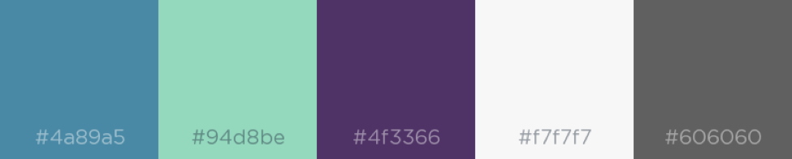

UI Design Plan
First and foremost, we would like our webapp to be intuitive and easy to use; most people do not like having to fiddle around with a website that is hard to navigate. For this reason, we are taking inspiration from many existing websites and established design conventions (such as putting the link to the user’s profile in the top right-hand corner). Some of the websites that have inspired our design include pinterest.com, a popular idea sharing website which many people already use to find new recipes, and supercook.com, an ingredient search website which, while similar to our concept, is not the most visually appealing website and has many aspects we feel we could improve upon.
Visually, we would like to keep the design simple and modern, letting the pictures of food be the main focus. Design choices will be made with this in mind; we will likely be using sans-serif fonts, icons that are minimalistic yet still understandable, and a colour palette that is understated, yet still feels fresh. We would like to use purple as a base colour - we are proud Western students, after all- but the final colour scheme has not been chosen yet. Some possible choices are shown below.
The first thing a user will see when they access our website is a search bar, similar to what you see when you access google. From there, users can search for recipes or simply explore which recipes are most popular. Displaying the recipes is where we take cues from Pinterest or Instagram- the pictures of the recipes will be displayed in a grid, and from there users can click each picture to learn more about the recipe. The grid design lends itself well to responsive design, allowing users to access the website from many different devices with many different screen sizes. Clicking on a recipe picture will open up a more detailed view of the recipe, showing the full list of ingredients and comments left by other users, similar to what happens on Pinterest when you click on a pin. Clicking on the recipe picture from this view will open up the source page in a new tab where the cooking steps will be found.
Below are some rough UI mockups showcasing the purposes User Interface of our webapp: